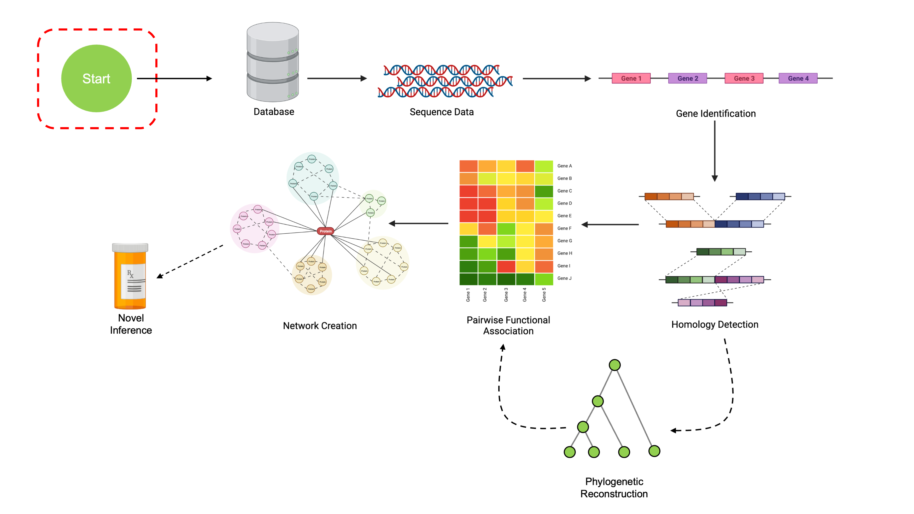
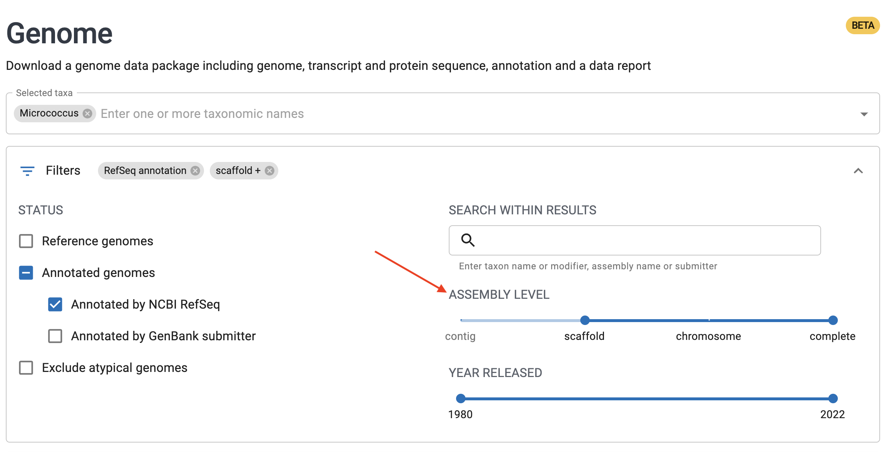
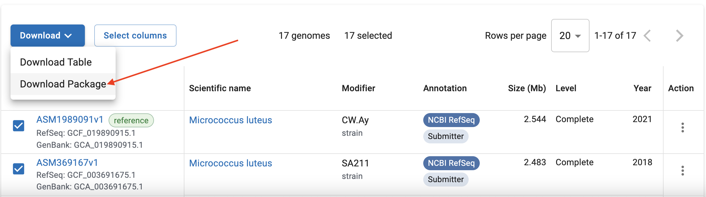
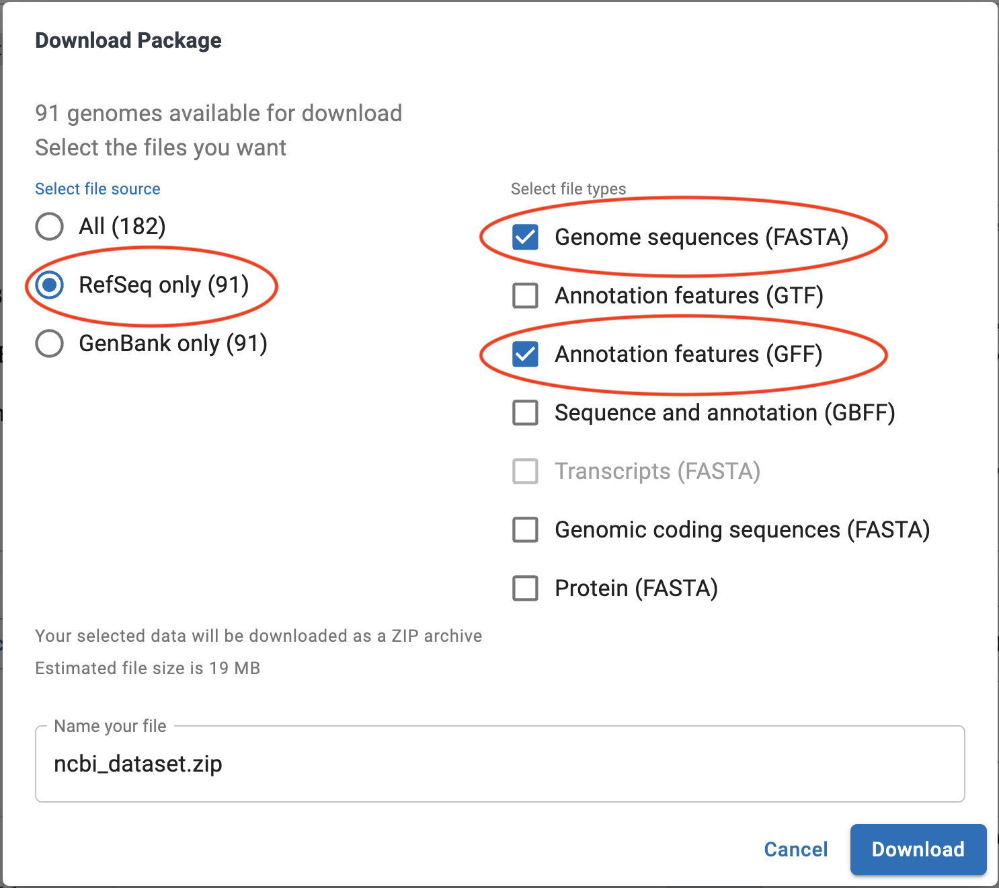

Setting up your environment
This tutorial depends on a few key packages to work correctly. This page will outline how to install all the necessary components for this workshop. If you’re attending this tutorial at Bioconductor 2022, you can skip directly to the next page.
Docker Installation
The easiest way to run the examples in this tutorial series are via Docker. If you have Docker installed, you can set up an environment with the following command:
docker run -e PASSWORD=<password> -p 8787:8787 ghcr.io/ahl27/compgenomicsbioc2022:latestThis will download the relevant Docker container and then launch an
RStudio server instance, which you can access by going to http://localhost:8787. The username is
by default rstudio, and the password is what you entered
for <password>.
Once in the Docker container, you can look at the
datafiles/ directory for all the files you’ll need to
follow along. Each folder corresponds to one of the tutorial pages on
this site, and includes all relevant datafiles plus an .Rmd
file with all the code (so you don’t have to copy-paste back and
forth).
Note that RStudio Server running in Docker is currently incompatible with ARM Macs, so in that case you’ll have to use your own RStudio instance.
For Bioconductor workshop attendees, we’ll be using the content in
the CONFERENCE_MATERIALS folder.
If you don’t want to use Docker, see below.
Prerequisites
All content will be shown using the R programming language. For
existing users, note that your version of R must be at
least version 4.2.x for compatibility with the packages
we’ll be using and access to Bioconductor 3.16.
I also recommend using RStudio as a development environment, since it’s an excellent IDE with tons of features. This step is totally optional; feel free to use whatever development environment you prefer.
Installing packages
This workshop depends on two main packages: DECIPHER and
SynExtend. These will be installed via Bioconductor, a package manager for
open source bioinformatics projects in R. These tutorials will use
DECIPHER version 2.25.0 and
SynExtend version 1.9.6, which are available
on the development version of Bioconductor.
if (!require("BiocManager", quietly = TRUE))
install.packages("BiocManager")
# Set BiocManager to use development versions
BiocManager::install(version='devel')
BiocManager::install('DECIPHER')
BiocManager::install('SynExtend')Downloading Data [Optional]
If you are interested in downloading the complete dataset yourself, follow these instructions. Note that this is not necessary; all relevant data for each part of the workshop is provided on subsequent pages. To proceed to the next page, use the navbar at the bottom of this page.
This workshop uses the set of all Micrococcus genomes with RefSeq annotations at assembly levels of Scaffold or above. All the data are included within this package, so you don’t have to download it yourself to be able to follow along! Each page also contains download links for the relevant datafiles.
If you’d like to download the data yourself, you can find the genomic data online at NCBI’s Genomes Browser. This link has the relevant query pre-filled.
You can subset this dataset to just complete genomes using the slider bar as shown:

Once you’ve selected the relevant genomes, you can download them with the “Download Package” button.

In the options dialog that appears, make sure to select “RefSeq Only” on the left, and then “Genome Sequences (FASTA)” on the right. You can optionally select “Annotation Features (GFF)”, though we’ll also cover how to create our own annotations in this workshop.

Again, download links for relevant data at each section will be included, so there is no need to do this unless you really want to.